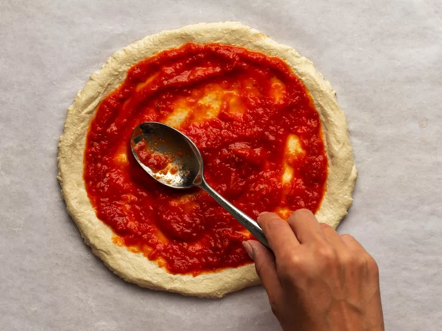

New York-Style Pizza Sauce

Description
This is a simple and delicious pizza sauce recipe that is perfect for New York-style pizza. It uses canned whole peeled tomatoes, which are blended with garlic, oregano, and a touch of sugar to create a rich and flavorful sauce.
Ingredients
- 1 (28-ounce) can whole peeled tomatoes
- 1 tablespoon (15 ml) extra-virgin olive oil
- 1 tablespoon (15 ml) unsalted butter
- 2 medium cloves garlic, grated on microplane grater (about 2 teaspoons)
- 1 teaspoon dried oregano
- Pinch red pepper flakes
- Kosher salt
- 1 medium yellow onion, peeled and split in half
- 2 (6-inch) sprigs fresh basil with leaves attached
- 1 teaspoon sugar
Instructions
- Process tomatoes and their juice through food mill, pulse in food processor until puréed, or purée with immersion blender. Purée should not be completely smooth, but should have no chunks larger than 1/16th of an inch. Set tomatoes aside.
- Combine oil and butter in medium saucepan and heat over medium-low heat until butter is melted. Add garlic, oregano, pepper flakes, and a large pinch of salt and cook, stirring frequently, until fragrant but not browned, about 3 minutes. Add tomatoes, onion halves, basil sprigs, and sugar. Bring to a simmer, reduce heat to lowest setting (bubbles should barely be breaking the surface), and cook, stirring occasionally, until reduced by half, about 1 hour. Discard onions and basil stems. Season to taste with salt. Allow to cool and store in covered container in the refrigerator for up to 2 weeks.
Back
Home